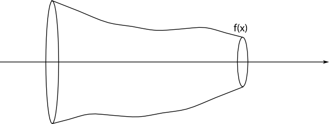

11. Rotationskroppar
Vi tar först och bestämmer volymer som bildas när funktioner roterar kring axlar. Efter det tar vi och bestämmer volymer allmännare plan.
Grafen för funktionen \( f(x)=\dfrac{1}{2}x^2 +1 \) i intervallet \( [1,3] \) roterar kring \( x \)-axeln. Bestäm volymen för den kropp som uppstår.
Lösning
Då \( f(x)=\dfrac{1}{2}x^2+1, x\in [1,3] \) roterar kring \( x \)-axeln får vi följande figur.

Vi tänker oss att volymen består av många skivor med en viss radie. Det vi gör är att adderar ihop dessa skivor för att få volymen.
Radien för en skiva är avståndet från \( x \)-axeln till punktens \( y \)-koordinat, alltså \( \dfrac{1}{2}x^2+1 = f(x) \). Arean för en skiva är \( \pi r^2 \), alltså \( \pi (\dfrac{1}{2}x^2+1)^2 =\pi f(x)^2 \).
För att addera ihop alla oändliga skivor integrerar vi från 1 till 3. Volymen är
\( \begin{array}{rcl} \displaystyle\int_1^3 \pi f(x)^2 \mathrm{ d} x & = & \pi \displaystyle\int_1^3 (\dfrac{1}{2}x^2+1)^2 \mathrm{ d} x \\ & = & \pi \displaystyle\int_1^3 \dfrac{1}{4}x^4+ x^2 + 1 \mathrm{ d} x \\ & = & \pi \bigg/_1^3 \dfrac{1}{4}\cdot \dfrac{1}{5}x^5 +\dfrac{1}{3}x^3 + x \\ & = & \pi [(\dfrac{1}{20}\cdot 3^5 +\dfrac{1}{3}\cdot 3^3 + 3)-(\dfrac{1}{20}\cdot 1^5 +\dfrac{1}{3}\cdot 1^3 + 1)] \\ & = & \pi (\dfrac{283}{20} - \dfrac{83}{60})\\ & = & \dfrac{683}{30} \pi \approx 71,5 \\ \end{array} \)
Då vi bestämmer volymen för en rotationskropp som uppstår då \( f(x) \) roterar i intervallet \( [a,b] \) kring \( x \)-axeln får vi \( V=\pi \displaystyle\int_a^b f(x)^2 \mathrm{ d} x \).

Exempel 1 Funktionen för \( f(x)=e^{\frac{x}{4}} \) roterar kring \( y=1 \). Bestäm volymen som uppstår i intervallet \( [0,2] \).
Lösning
Vi har följande situation.

Radien som uppstår för kroppen vi rotationen har radien \( e^{\frac{x}{4}}-1 \). Volymen är
\( \begin{array}{rcl} \displaystyle\int_0^2 \pi (e^{\frac{x}{4}}-1)^2 \mathrm{ d}x & = & \pi \displaystyle\int_0^2 e^{\frac{x}{2}}-2e^{\frac{x}{4}}+1 \mathrm{ d}x \\ & = & \pi \displaystyle\int_0^2 2\cdot\dfrac{1}{2}e^{\frac{x}{2}}-2\cdot 4\cdot\dfrac{1}{4}e^{\frac{x}{4}}+1 \mathrm{ d}x \\ & = & \pi \bigg/_0^2 2e^{\frac{x}{2}}-8e^{\frac{x}{4}}+x\\ & = & \pi[(2e^{\frac{2}{2}}-8e^{\frac{2}{4}}+2)-(2e^{\frac{0}{2}}-8e^{\frac{0}{4}}+0)] \\ & = & \pi [(2e-8\sqrt{e}+2)-(2-8-0)]\\ & = & \pi(2e-8\sqrt{e}+8) \approx 0,76\\ \end{array} \)
Då funktionen \( f(x) \) roterar i intervallet \( [a,b] \) kring linjen \( y=c \) är arean av en skiva \( \pi (f(x)-c)^2 \). Volymen för rotationskroppen är \( \pi \displaystyle\int_a^b (f(x)-c)^2 \mathrm{ d}x \).
Exempel 2 Funktionen \( y=x^3 \) roterar kring \( y \)-axeln. Bestäm volymen som bildas i intervallet då \( x\in[-1,2] \).
Lösning
Vi har följande situation:

För att kunna integrera med avseende på \( y \) måste vi skriva funktionen som \( f(y)=\ldots \).
Eftersom
\( \begin{array}{rcl} f(x) & = & x^3 \\ y & = & x^3 \\ x & = & \sqrt[3]{y} \\ \end{array} \)
Eftersom vi har en funktion där \( f(y) = \sqrt[3]{y} \) måste vi veta intervallet på \( y \)-axeln. Då \( f(-1)=-1 \) och \( f(2)=8 \) är intervallet \( [-1,8] \) som vi intergrerar i.
Volymen är
\( \begin{array}{rcl} \displaystyle\int_{-1}^8 \pi (\sqrt[3]{y})^2 \mathrm{ d} y & = & \pi \displaystyle\int_{-1}^8 y^{\frac{2}{3}} \mathrm{ d}y \\ & = & \pi \bigg/_{-1}^8 \dfrac{1}{1+\dfrac{2}{3}} y^{\frac{2}{3}+1} \\ & = & \pi \bigg/_{-1}^8 \dfrac{3}{5} y^{\frac{5}{3}} \\ & = & \dfrac{3\pi}{5} \bigg/_{-1}^8 (\sqrt[3]{y})^5 \\ & = & \dfrac{3\pi}{5} (\sqrt[3]{8}^5-\sqrt[3]{-1}^5) \\ & = & \dfrac{3\pi}{5} (2^5 -(-1)^5) \\ & = & \dfrac{3\pi}{5} \cdot 33 \\ & = & \dfrac{99\pi}{5} \approx 62,2 \\ \end{array} \)
Uppgifter
- Funktionen \( f(x) = 2x-3 \) roterar kring x-axeln.
- Bestäm storleken av volymen som bildas i intervallet \( [2,4] \).
Volymen är \( V = \pi \displaystyle\int_2^4 (2x-3)^2 \textrm{ d}x = \dfrac{62 \pi}{3} \approx 64,9 \) v.e.
- Bestäm storleken av den tudelade kropp som bildas i intervallet \( [0,5] \).
Vi bestämmer volymen genom att integrera från 0 till 5.
Volymen är \( V = \pi \displaystyle\int_0^5 (2x-3)^2 \textrm{ d}x = \dfrac{185 \pi}{3} \approx 193,7 \) v.e.
- För vilket värde på \( a \) har volymen värdet \( \dfrac{76\pi}{3} \) då vi integerar i intervallet \( [-1,a] \).?
Vi bildar ekvationen \( V = \pi \displaystyle\int_{-1}^a (2x-3)^2 \textrm{ d}x = \dfrac{76 \pi}{3} \).
Ekvationen kan vi lösa för hand eller på räknare, vi får \( a = 3 \).
- Bestäm storleken av volymen som bildas i intervallet \( [2,4] \).
- Bestäm volymen som bildas i intervallet \( [1,4] \) då \( f(x)=\dfrac{1}{2}x+1 \) roterar kring \( x \)-axeln.
Vi har \( \pi\displaystyle\int_1^4 (\dfrac{1}{2}x+1)^2 \mathrm{ d} x = \dfrac{63\pi}{4} \approx 49,48 \) v.e.
- Bestäm volymen som bildas i intervallet \( [0,2] \) då \( f(x)=\dfrac{1}{4}x^2+1 \) roterar kring \( x \)-axeln.
Vi har \( \pi \displaystyle\int_0^2 (\dfrac{1}{4}x^2+1)^2 \mathrm{ d} x = \dfrac{56\pi}{15} \approx 11,73 \).
- Bestäm volymen som bildas i intervallet \( [1,3] \) då \( f(x)=e^x+1 \) roterar kring \( x \)-axeln.
Vi har \( \pi \displaystyle\int_1^3 (e^x+1)^2 \mathrm{ d} x = \dfrac{\pi}{2}(e^6+4e^3-e^2-4e+4) \approx 737,50 \).
- Bestäm volymen som bildas i intervallet \( [1,3] \) då \( f(x)=\dfrac{1}{x}+1 \) roterar kring \( y=2 \).
Vi har \( \pi \displaystyle\int_1^3 (\dfrac{1}{x}+1-2)^2 \mathrm{ d} x = \pi(-2\ln3 + \dfrac{8}{3}) \approx 1,4748\ldots \).
- Bestäm volymen som bildas i intervallet \( [-1,2] \) då \( f(x)=\dfrac{1}{4}x^2+x \) roterar kring \( y=1 \).
Vi har \( \pi \displaystyle\int_{-1}^2 (\dfrac{1}{4}x^2+x-1)^2 \mathrm{ d} x = \dfrac{303\pi}{80} \approx 11,90 \).
- Funktionen \( f(x)=\dfrac{1}{4}x^2 +\dfrac{1}{4} \) roterar kring \( x \)-axeln. För vilket värde på \( a \) gäller att volymen som bildas i intervallet \( [0,a] \) har ett värde som är större än 4,92?
Vi får uttrycket \( \pi \displaystyle\int_0^a (\dfrac{1}{4}x^2 +\dfrac{1}{4})^2 \mathrm{\, d} x = 4,92 \).
Vi kan bra lösa ekvationen på räknarprogram.
Ekvationen har lösningen \( a=2 \).
- Bestäm volymen av den kropp som bildas då \( f(x)=x^2 \) roterar kring \( y \)-axeln då \( x\in [0,2] \).
Funktionen som vi arbetar med är \( y=x^2 \Leftrightarrow x=\sqrt{y} \). Alltså \( f(y) =\sqrt{y} \).
Då \( x=0 \) är \( y=0 \) och då \( x=2 \) är \( y=4 \). Intervallet som vi intergrerar i är 0 till 4.
Volymen är \( \pi \displaystyle\int_0^4 (\sqrt{y})^2 \mathrm{ d} y = 8\pi \approx 25,13 \).
- Bestäm volymen av den kropp som bildas då \( f(x)= \ln x , x\in [1,e] \) roterar kring \( y \)-axeln.
Funktionen som vi arbetar med är \( y=\ln x \Leftrightarrow x = e^y \Leftrightarrow f(y)=e^y \).
Då \( x=1 \) är \( y=0 \) och då \( x=e \) är \( y=1 \).
Volymen är \( \pi \displaystyle\int_0^1 (e^y)^2 \mathrm{ d}y = \dfrac{\pi(e^2-1)}{2} \approx 10,0 \).
- Bestäm volymen för ett klot med radien \( r \).
Arbeta med ekvationen för en cirkel, \( x^2+y^2=r^2 \) och uttryck den som \( y=\ldots \).
Vi får att \( y=\pm \sqrt{r^2-x^2} \). Vi arbetar med \( y=\sqrt{r^2-x^2} \), roten är definierad då \( r^2-x^2 \geq 0 \Leftrightarrow -r \leq x \leq r \).
Då vi bestämmer \( \pi \displaystyle\int_{-r}^r \sqrt{r^2-x^2}^2 \mathrm{ d} x \) får vi halva volymen.
Hela volymen är \( 2\pi \displaystyle\int_{-r}^r \sqrt{r^2-x^2}^2 \mathrm{ d} x = \dfrac{4\pi r^3}{3} \).